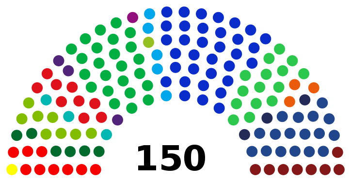
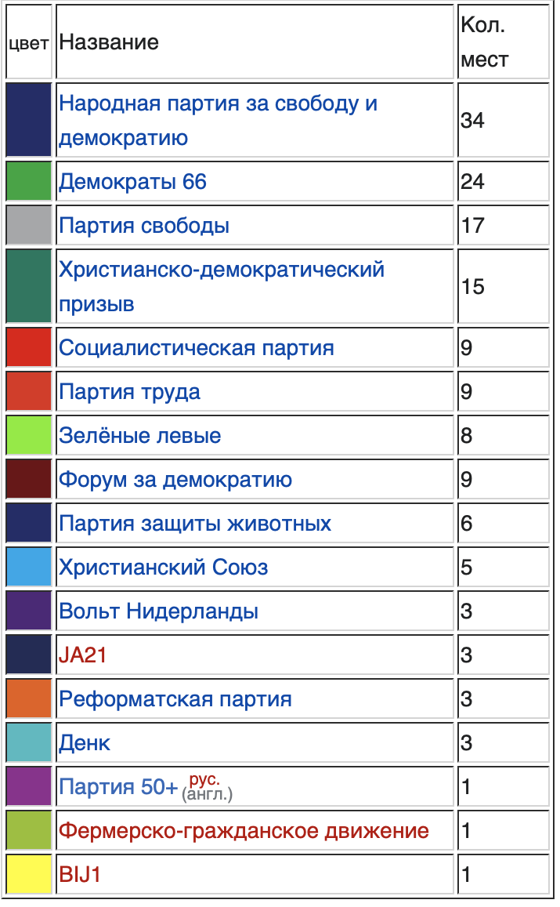
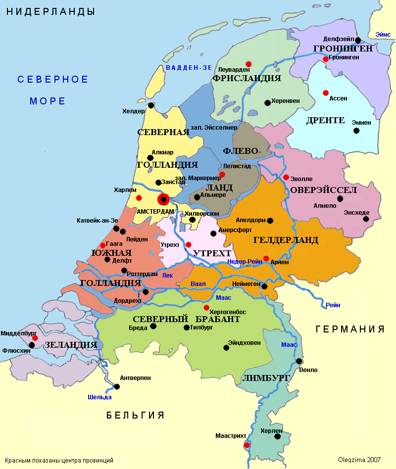
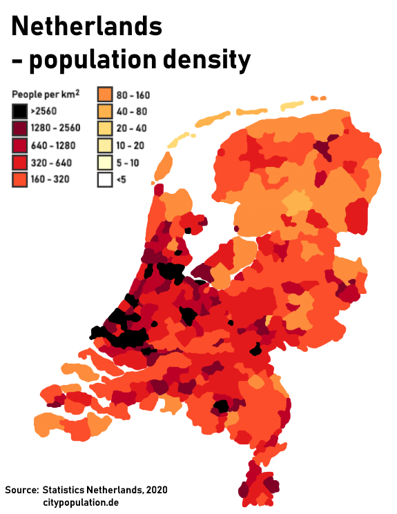
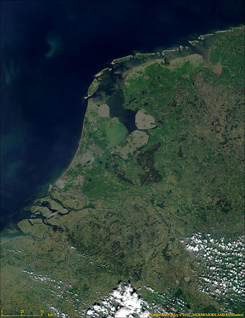

Государство, состоящее из основной территории в Западной Европе и островов Бонайре, Синт-Эстатиус и Саба в Карибском море (называемых также Карибскими Нидерландами). В Западной Европе территория омывается Северным морем (длина береговой линии — 451 км) и граничит с Германией (577 км) и Бельгией (450 км). Вместе с островами Аруба, Кюрасао и Синт-Мартен, имеющими особый статус (самоуправляемое государственное образование), Нидерланды входят в Короле́вство Нидерла́ндов (нидерл. Koninkrijk der Nederlanden). Отношения между членами королевства регулируются Хартией Королевства Нидерландов, принятой в 1954 году. Государственный флаг — трёхцветный (красный, белый, синий по горизонтали). Герб — увенчанный золотой короной щит голубого цвета, который поддерживают с боков два геральдических льва. На щите — вздыбленный коронованный лев с мечом в лапе; под щитом — королевский девиз: Je maintiendrai («Я выстою»). Гимн — «Вилхелмус» («Песнь о Вильгельме»). Национальный праздник — 27 апреля (День короля). Официальной столицей государства, согласно конституции Нидерландов, является Амстердам, где монарх приносит присягу на верность Конституции. При этом фактической столицей является Гаага, где расположены королевская резиденция, парламент и правительство, а также большинство посольств иностранных государств. Другие важные города: Роттердам — самый большой порт страны и один из крупнейших портов мира, Утрехт — центр железнодорожной системы страны и Эйндховен — центр электроники и высоких технологий. Гаага, Амстердам, Утрехт и Роттердам составляют агломерацию Рандстад, где проживает примерно 7,5 миллиона человек. Площадь территории в европейской части — 41 543 км² (суша — 33 888 км², вода — 7650 км²), население — 17 719 000 человек ( 28 января 2023). Площадь территории в Карибском море — 978,91 км² (Бонайре, Синт-Эстатиус и Саба — 322 км², Аруба — 178,91 км², Кюрасао — 444 км², Синт-Мартен — 34 км²), население — 313 968 чел. (Бонайре, Синт-Эстатиус и Саба — 18 012 чел., Аруба — 103 889 чел., Кюрасао — 154 843 чел., Синт-Мартен — 37 224 чел.). Нидерланды — многонациональное государство с широким этнокультурным, религиозным, расовым и национальным многообразиемПерейти к разделу «#Этнический состав».Нидерланды — член ООН, НАТО, Совета Европы, Европейского союза, ОЭСР. Часть шенгенской зоны и Бенилюкса. Официальный язык — нидерландский.
Государственное деление
Политическая жизнь Нидерландов достаточно богата и представлена многочисленными партиями. Среди наиболее популярных партий Нидерландов можно выделить: Народную партию за свободу и демократию, Демократы 66 и Партию свободы[17]. На данный момент, после проведённых 17 марта 2021 года выборов в Палату представителей, следующие партии получили места:

Административное деление
Нидерланды делятся на 12 провинций (последняя провинция Флеволанд создана в 1986 году на осушенных территориях), провинции делятся на общины. В составе Нидерландов также находятся три особые общины в Карибском море: Бонайре, Саба и Синт-Эстатиус. Представительные органы провинций — провинциальные штаты (Provinciale Staten), исполнительные органы провинций — депутаты штатов (Gedeputeerde Staten), состоящая из комиссара короля (Commissaris van de Koning) и депутатов (gedeputeerde), представительные органы общин — общинные советы (Gemeenteraad), исполнительный орган — коллегия бургомистра и советников (College van burgemeester en wethouders), состоящая из бургомистра (Burgemeester) и советников. Основные единицы местной администрации — общины, которых на 2020 год насчитывается 355.
Население
Численность населения составляет 17 719 000 человек ( 28 января 2023).[21] В списке стран по количеству жителей Нидерланды занимают 66-е место. По сравнению с другими странами Европы население Нидерландов весьма быстро росло последние полтора века: 3 миллиона жителей в 1850 году, 5 миллионов — в 1900-м, 10 миллионов — в 1950-м, 15 миллионов — в 1991-м, 16 миллионов — в 2002-м и 17 миллионов — в 2017-м. Для сравнения: население Бельгии в тот же период увеличилось всего примерно в два раза: с 4,5 миллионов жителей в 1850 году до 10 миллионов в 2000-м.
По официальному прогнозу центрального статистического бюро Нидерландов от 2020 года население Нидерландов по базовому сценарию к 2070 году составит 20 423 000 человек. Население Нидерландов будет расти в ближайшие десятилетия, главным образом из-за того, что в Нидерланды приезжает больше людей, чем уезжает, а также из-за увеличения продолжительности жизни. С 2023 года также будет рождаться больше детей, но в долгосрочной перспективе этого будет недостаточно, чтобы компенсировать растущее число смертей вызванное демографическим старением населения. Согласно текущим исследованиям, между 2040 и 2060 годами ежегодно будет умирать больше населения, чем рождаться. Ожидается, что население Нидерландов в возрасте старше 65 лет вырастет с 20 % в конце 2020 года до 25 % в 2040 году. Это результат послевоенного бэби-бума и большого числа рождённых в 1960-х годах, а также увеличения продолжительности жизни. Ожидается, что число пожилых людей стабилизируется между 2040 и 2050 годами, когда меньшие поколения переживут 65 лет и многие пожилые люди из послевоенных поколений умрут. После 2050 года количество пожилых людей в населении снова увеличится, отчасти потому, что большому поколению миллениалов тогда исполнится 65 лет. Ожидается, что население Нидерландов в возрасте от 20 до 65 лет вырастет с 10,3 миллиона человек в 2021 году до 10,9 миллиона человек в 2070 году. Число людей в возрасте от 0 до 20 лет вырастет с 3,7 миллиона человек в 2021 году до 4,2 миллиона человек в 2070 году. За последние двадцать лет (с 2000 г. по конец 2020 г.) население Нидерландов увеличилось на 1,5 миллиона жителей, 96 % данного роста обеспечили иммигранты и их потомки, это связано с иммиграцией, а также с тем, что у первого поколения мигрантов были дети (второе поколение иммигрантов). Население Нидерландов коренного голландского происхождения сокращается с 2015 года, потому что больше людей умирает, чем рождается детей, и немного больше людей эмигрируют, чем иммигрируют. В ближайшие десятилетия, как и до этого начиная с 1970-х годов, в связи с завершением демографического перехода, население Нидерландов будет расти только за счет иммигрантов и их потомков, а население Нидерландов коренного голландского происхождения будет продолжать сокращаться. Если на 1 ноября 2021 года в общей сложности иммигранты и их потомки составляли 25,2 % населения Нидерландов, то уже к 2070 году ожидается что иммигранты и их потомки будут составлять до 42 % населения Нидерландов. Как и в 2020 году, так и в будущем почти половина населения Нидерландов иммигрантского происхождения родились в самих Нидерландах (второе поколение иммигрантов), причем по крайней мере один из их родителей родился за границей. При площади территории в 41 543 км², согласно данным на 2020 год, Нидерланды имеют плотность населения 517 человек на квадратный километр. Таким образом, Нидерланды являются 15-м по плотности населения государством в мире. Наиболее плотно заселены три западные провинции: Северная Голландия, Южная Голландия и Утрехт (средняя плотность населения 1000 чел./км² и более; максимальные показатели отмечаются в урбанизированных районах — свыше 2000 чел./км²). Во многом благодаря этому, а также развитой экономики и высоким уровнем доходов населения, Нидерланды являются одной из стран с наиболее развитой транспортной и информационной инфраструктурой. На 2020 год, по данным МСЭ, в стране насчитывалось 16 383 879 интернет-пользователей, что составляло примерно 95,4 % от всего населения страны, по этому показателя Нидерланды занимали 4-е место в ЕС после Дании — 97,9 %, Мальты — 97,2 %, Литвы — 96,8 % и Эстонии — 96,3 %.
При площади территории в 41 543 км², согласно данным на 2020 год, Нидерланды имеют плотность населения 517 человек на квадратный километр[3]. Таким образом, Нидерланды являются 15-м по плотности населения государством в мире. Наиболее плотно заселены три западные провинции: Северная Голландия, Южная Голландия и Утрехт (средняя плотность населения 1000 чел./км² и более; максимальные показатели отмечаются в урбанизированных районах — свыше 2000 чел./км²)[9]. Во многом благодаря этому, а также развитой экономики и высоким уровнем доходов населения, Нидерланды являются одной из стран с наиболее развитой транспортной и информационной инфраструктурой. На 2020 год, по данным МСЭ, в стране насчитывалось 16 383 879 интернет-пользователей, что составляло примерно 95,4 % от всего населения страны, по этому показателя Нидерланды занимали 4-е место в ЕС после Дании — 97,9 %, Мальты — 97,2 %, Литвы — 96,8 % и Эстонии — 96,3 %.

Физико-географическая характеристика
Нидерланды — самая густонаселённая страна Европы (если исключить несколько стран-карликов). На территории страны очень густая речная сеть, сходящиеся на ней устья рек Рейна, Мааса и Шельды образуют обширную общую судоходную дельту. Реки полноводны и приносят массы наносов, но нередко их русла несут опасность наводнений. Из почв, нанесённых этими реками, образовались дельта и обширная плоская низменность. Рельеф Нидерландов в основном составляют прибрежные низменности, на юго-востоке есть небольшие возвышенности, также достаточно большие территории приращиваются за счёт морских территорий. Половина территории лежит ниже уровня моря, и только на юге Нидерландов местность повышается до 30 метров и более. Большая часть низменностей находится в провинциях Северная Голландия, Южная Голландия и Флеволанд. Береговая линия сформирована наносными дюнами. За ними идут некогда отвоёванные у моря земли, называемые польдерами и защищённые дюнами и дамбами от морских вод. В целом большинство почв относится к подзолистым, но рядом с Северным морем есть и плодородные иловатые почвы, а по долинам рек — аллювиально-луговые. Польдеры, почти полностью используемые для нужд сельского хозяйства, сложены преимущественно глинами и торфами. В южных и восточных районах страны распространены в основном песчаные почвы, в значительной степени занятые под пашни. Местами здесь сохранились вересковые пустоши (низкотравье с кустарничками) и сосново-дубово-буковые леса. Плато южного Лимбурга покрыты лёссом эолового происхождения. Здесь развиты плодородные суглинистые почвы, составляющие основу земледелия. Большинство диких животных Нидерландов вытеснено из мест обитания человеком. Тем не менее в стране встречается немало птиц, особенно водоплавающих. Многие редкие виды животных находятся под охраной в национальных парках и заповедниках. 21,96 % земли используется для пахоты. Высшая точка страны — Валсерберг (322 м), расположенная на юго-востоке, а низшая — Заудпластполдер (−6,74 м ниже уровня моря).
